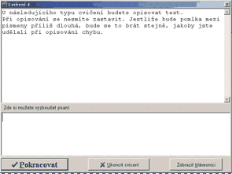
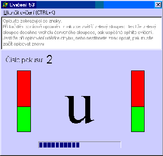

O programu Písař
Program Písař je určen pro výuku psaní na počítači deseti prsty. Osnovy programu
jsou zaměřeny tak, aby výuka probíhala spíše ve více kratších cvičeních. Dobře a hlavně
přehledně jsou znázorněny informace o výsledcích v průběhu cvičení.

V programu jsou cvičení, která uživatele pouze informují. V pomocí těchto informačních
cvičení se uživatel dozvídá například jak se správně píše některý znak. V těchto
cvičeních je možno si psaní si rovnou nezávazně nanečisto vyzkoušet.

Zajímavé cvičení jsou cvičení, kde uživatel musí opisovat zobrazující se znaky. Na opsaní
každého znaku má určitý čas. Jestliže je znak opsán správně, pak se zvětší zelené sloupce
vedle písmene. Jestliže je však znak opsán špatně, nebo po časovém limitu, pak se
zelené sloupce spadnou na minimum.
 Nejbežnější cvičení jsou cvičení, kde uživatel opsisuje text. Pro splnění cvičení
musí splnit různé podmínky. Opsat cvičení s určítým maximálním počtem chyb, nebo
dosáhnout určitého počtu úhozů. Za chybu při opisování se odečítá určitý předem
stanovený počet úhozů. Při opisování se nesmí uživatel zastavit, jinak
se to bere jako když při opisování udělá chybu.
Nejbežnější cvičení jsou cvičení, kde uživatel opsisuje text. Pro splnění cvičení
musí splnit různé podmínky. Opsat cvičení s určítým maximálním počtem chyb, nebo
dosáhnout určitého počtu úhozů. Za chybu při opisování se odečítá určitý předem
stanovený počet úhozů. Při opisování se nesmí uživatel zastavit, jinak
se to bere jako když při opisování udělá chybu.
V programu jsou i jiné druhy cvičení. Mimo jiné je zde i tester, ve kterém
si můžete vyzkoušet a procvičit rychlost a chybovost svého psaní. Dále se zde nachází
například například i pomocná klávesnice, která vám pomůže rychle zjistit jakým prstem
psát požadované písmeno.